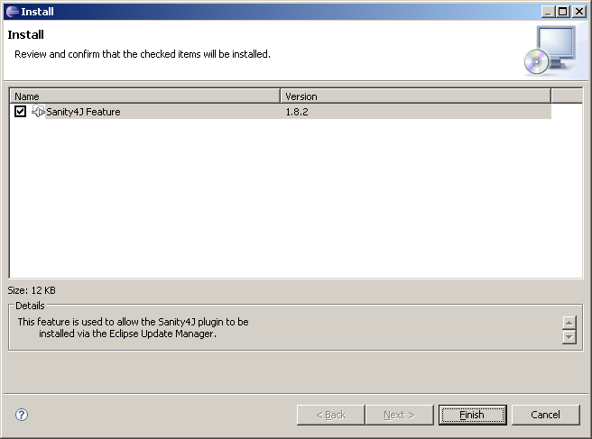
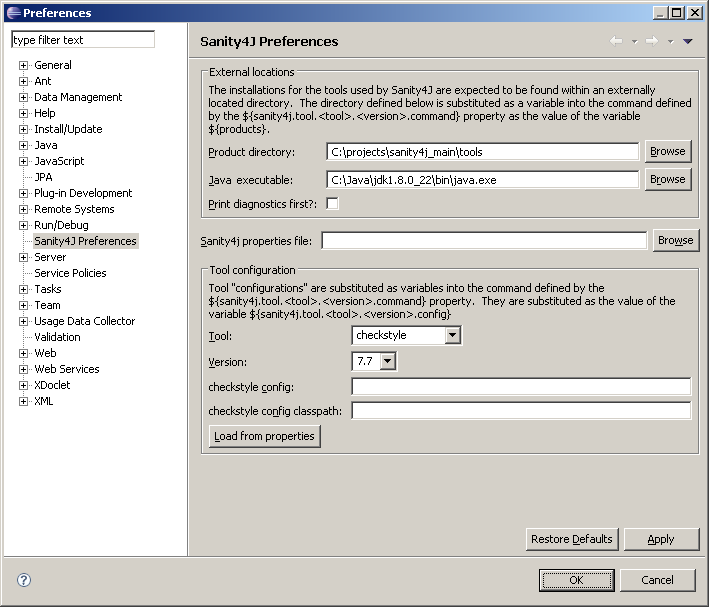
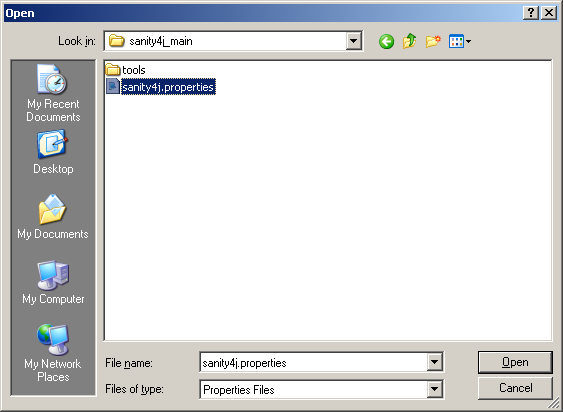

Sanity4J has been created in order to simplify running ad-hoc static code analysis over Java projects using a standardised set of rules types and priorities.
Various tools are used to conduct the analysis, each with their own set of requirements. Both bytecode and source code are analysed, to ensure the best chance of finding potential problems. Sanity4J presents a single interface to run all the tools and produce a combined report presenting all the findings in a easily accessible manner.
Sanity4J provides an Eclipse plugin for developers to run ad-hoc QA on individual classes during development.
To run the Eclipse plugin, you will need the following:
The following steps are for Eclipse 3.4 - Ganymede. Other versions of Eclipse will vary, but essentially it is the same process.
Start from the "Help" menu and choose "Software Updates..."
From the "Available Software" tab, click the "Add Site..." button.
Eclipse allows you to install the plugin directly from the ZIP file without having to extract it, or from a local directory where the ZIP file can be extracted to. In this case we will simply install the plugin directly from the ZIP Archive.
Click the "Archive..." button to choose a Location.
Choose the location of the Archive; sanity4j-1.1.1-eclipse.zip
Click OK to confirm the Location.
You should now see the Sanity4J Feature listed in the Available Software. Tick the tickbox for the Sanity4J Feature and click "Install..."
You will be presented with a confirmation dialog for the Feature to install.
You will need to accept the license agreement.
After the installation is complete you will be prompted to restart Eclipse. Choose Yes and restart Eclipse.
The Sanity4J plugin can be configured from the Eclipse Preferences. From the Window menu choose Preferences.

Choose the Sanit4J Preferences from the Preferences list. You will need to configure the locations of the Tools product directory and the Java executable.
Click the "Browse" button next to the "Product directory" field.
Choose the location of the product tools, then click OK. This can be the extracted location of the sanity4j-1.1.1-bin-with-tools.zip
Click the "Browse" button next to the "Java 1.5 executable" field.
Choose the location for the Java executable (e.g. java.exe on the windows platform). This should is usually in the java\bin directory.
The Sanity4J Configuration and Classpath for plugins can be configured for Eclipse by manually specifiy the values or by importing them from an existing sanity4j.properties file.
For this example we will import them.
Click the "Browse" button next to the "Sanity4j properties file" field. Choose the location of your sanit4j.properties file, then click Open.
Click the "Load from properties" button. You will see that the Configuration and Classpath fields will be populated from the values in the sanity4j.properties file.
To run the Sanity4J Eclipse plugin you will need to have a Java Class open in the Workspace. The "QA" icon on the Menu Bar will become available.
After clicking the button, the analysis will begin. The analysis will be made only for the currently active Java Class that is open.
Upon completion of the analysis, the "Sanity4J results" pane will be visible. The pane will show the results of the analysis of the current Java Class.